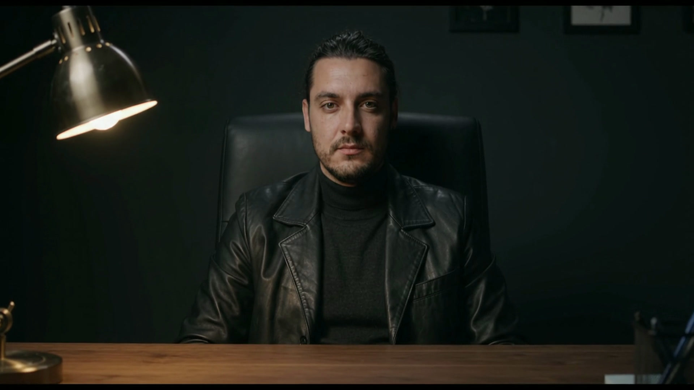

Private Digital Screening Room · User-Initiated Playback
Who Gives a Damn?

Screening Access
Digital Screening Pass
Private high-definition stream with synchronized English captions, delivered via short-lived signed playback after confirmed Stripe Checkout.